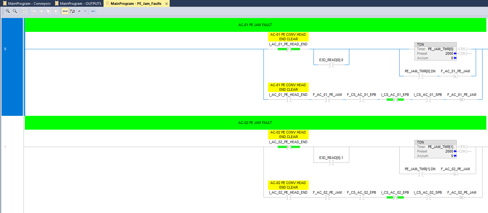
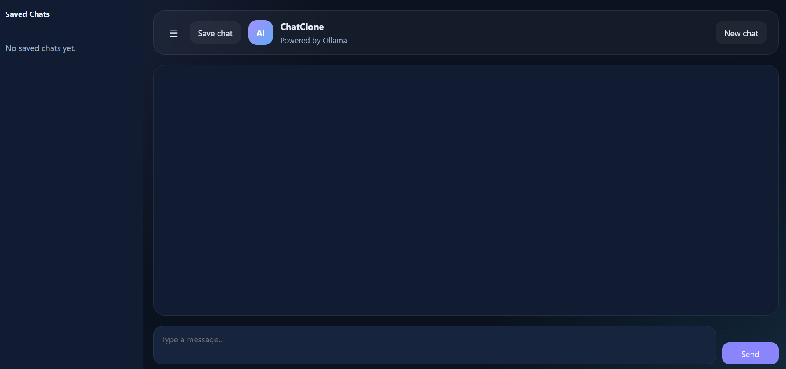

ConvSys — Virtual Conveyor Solutions


Project Overview
ConvSys is a comprehensive turnkey conveyor system solution that combines virtual design, PLC automation, and operator training. It provides a complete package for designing, testing, and training on industrial conveyor systems in a virtual environment before physical deployment.
Key Features
- Virtual Design & Simulation: Full 3D virtual conveyor models to validate flow, sensor placement, and system interactions.
- PLC Ladder Logic: Industry-standard Allen-Bradley ladder routines with complete fault handling and safety interlocks.
- Fault Detection: Photo-eye jam detection, motor overload monitoring, and predictive maintenance logic.
- HMI & Control Stations: Virtual operator stations for safe, cost-effective training and acceptance testing.
- SCADA Integration: FactoryTalk compatible interfaces and documentation for seamless integration with existing systems.
- Operator Training: Complete simulation-based training modules to reduce ramp-up time and commissioning risks.
Technical Details
PLC Programming: Complete control sequence with fault handling, emergency stops, and diagnostics.
Sensors & Inputs: Photo-eye sensors, pressure switches, motor run feedback, and junction presence detection.
Safety Features: Dual-channel fault detection, jam prevention, and real-time alerts for operator safety.
Documentation: Full project documentation, ladder logic printouts, and troubleshooting guides included.
Benefits
- Virtual testing reduces commissioning time by 40-50%
- Operator training is safer and more cost-effective than physical systems
- Fault handling logic is proven and validated before deployment
- Complete documentation ensures smooth integration and future maintenance
System Demonstration
Conveyor operation and sequencing demonstration
3D virtual conveyor system visualization
Development Process
- Requirements Analysis: Consultation to identify throughput targets, system constraints, and safety requirements.
- Virtual Prototype: Create a virtual conveyor model with complete PLC logic and HMI interface for initial review and testing.
- Validation & Testing: Comprehensive fault injection testing, operator training, and acceptance procedures validated in simulation.
- Integration & Delivery: Finalized PLC code, ladder logic documentation, and integration guides delivered for field commissioning.
- Support & Training: Ongoing support and operator training to ensure successful deployment and maintenance.
AI Chat Application — Ollama-Powered Conversational AI

 AI Chat Interface
AI Chat Interface
Project Overview
A modern, full-featured AI chat application powered by Ollama that enables users to have intelligent conversations, save chat history, and create multiple conversation threads. The application provides a seamless interface for interacting with local language models with persistent storage capabilities.
Key Features
- Multi-Chat Support: Create, manage, and switch between multiple independent chat conversations.
- Chat Persistence: Automatically save all conversations with full chat history and context preservation.
- Ollama Integration: Leverage local language models for fast, private AI interactions without external API calls.
- Question Answering: Intelligent responses to user queries with context-aware understanding.
- Chat Management: Edit, delete, and organize conversations with intuitive user controls.
- Real-time Processing: Streaming responses for natural, interactive conversations.
Technical Details
Architecture: Full-stack application with frontend UI and backend API integration.
AI Engine: Ollama for running local language models (LLaMA, Mistral, Neural Chat, and more).
Data Storage: Persistent database for saving chats, conversation history, and user preferences.
User Interface: Responsive, intuitive design for ease of use across devices.
Core Functionality: Create new chats, send messages, receive AI responses, save chat history, and manage multiple conversations simultaneously.
Benefits
- Privacy-first approach with local model execution
- No API rate limits or usage fees
- Complete chat history available for reference and learning
- Flexible conversation management for various use cases
- Low latency responses from local processing
Development Process
- Requirements Definition: Design the chat interface and data model for conversation storage.
- Ollama Integration: Set up Ollama connection and implement API communication for model inference.
- Database Design: Create schema for storing chats, messages, and conversation metadata.
- Frontend Development: Build responsive UI with chat interface, message input, and chat management controls.
- Feature Implementation: Add multi-chat support, persistence, streaming responses, and history management.
- Testing & Refinement: Validate AI responses, test chat saving/loading, and optimize user experience.
To-Do Application — Task Management & Calendar System
 To-Do App Dashboard
To-Do App Dashboard
Project Overview
A comprehensive task management application featuring an integrated calendar system, server-based architecture, and a responsive home page. The application provides users with an intuitive platform to create, organize, and track their tasks with calendar visualization and real-time synchronization.
My Responsibilities
- Server Architecture: Designed and implemented the backend server infrastructure for handling task management, user authentication, and data persistence.
- Calendar System: Built the calendar component with task scheduling, date-based filtering, and visual task indicators.
- Home Page & Website: Created the foundational home page layout, navigation structure, and core responsive design.
- Core Functionality: Implemented task creation, editing, deletion, and status tracking system.
- Database Integration: Designed database schema and established ORM connections for efficient data management.
Key Features
- Task Management: Create, edit, and delete tasks with priority levels and due dates.
- Calendar Integration: Visual calendar display with color-coded tasks and date-based organization.
- Task Status Tracking: Mark tasks as complete, pending, or in-progress with real-time status updates.
- Server Synchronization: Automatic sync between client and server ensuring data consistency across devices.
- Responsive Design: Mobile-friendly interface that adapts to all screen sizes.
- User Dashboard: Centralized home page showing task overview, upcoming deadlines, and quick-access controls.
- Task Organization: Categorize tasks, set reminders, and organize by priority or due date.
Technical Details
Architecture: Full-stack application with Node.js/Express backend and modern frontend framework.
Server Setup: RESTful API endpoints for task CRUD operations, user management, and data retrieval.
Calendar Module: Calendar library integration with custom styling and task visualization layers.
Database: Relational database (SQL) or NoSQL solution for storing tasks, user data, and scheduling information.
Frontend Stack: HTML, CSS, and JavaScript with responsive layout framework for cross-device compatibility.
Real-time Features: WebSocket or polling implementation for live updates and synchronization.
Benefits
- Centralized task management across multiple devices
- Visual calendar representation for better deadline awareness
- Improved productivity through organized task prioritization
- Seamless data persistence and synchronization
- Intuitive user interface reduces learning curve
- Scalable server architecture supports future feature expansion
Development Process
- Design & Planning: Outline application structure, user workflows, and database schema requirements.
- Server Implementation: Build backend API with authentication, task endpoints, and database connections.
- Home Page Development: Create responsive landing page, navigation, and dashboard layout.
- Calendar Component: Integrate calendar library and develop custom task visualization features.
- Core Functionality: Implement task CRUD operations, status management, and synchronization logic.
- Frontend Refinement: Polish UI/UX, ensure responsive design, and optimize performance.
- Integration & Testing: Connect frontend to backend, perform end-to-end testing, and validate data persistence.